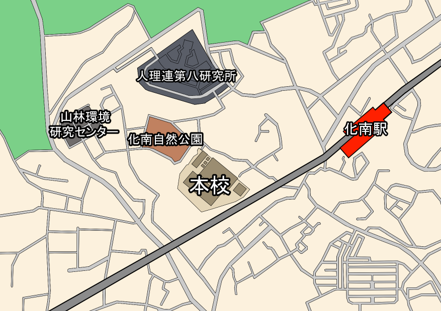

学校からのお知らせ
見出しをクリックすると全文を表示します。
【予告】雨が降る予定です
()
気象省及び人類理化学連盟の共同研究の一環により、化南群が第一回人工降雨実験の実証試験地となりました。
試験日は明日 4/9 (土) を予定しておりますので、雨具の準備等お願い致します。
(校内用務員)
URL が変更になりました
()
技術部門担当者のヘマによりドメインを失効させてしまったため、ホームページの URL が変更になりました。
お手数をお掛けしますが、お気に入り、ブックマークへ登録されている方は、登録の変更をお願いします。
(校内事務)
校歌を試聴できるようになりました
()
化南郡立化学物質不使用小学校の校歌を試聴できるようになりました。
電子六味線の演奏は傘下勝機氏によるものです。
児童たちの高らかな歌声をどうぞお聴きください。
(校内事務)
臨時休業のお知らせ
()
本校は本日より一年間の臨時休業となります。
休業期間中は開庁時間に変更がある場合があります。
詳細に関しましては校内事務までお問い合わせください。
(校内事務)
一日校長体験学習を実施しました
()
本校では体験型学習の一環として、一年生を対象に「一日校長体験学習」を例年実施しております。
今年も児童たちは「一日校長」として、教員のサポートのもと書類への捺印や校内の見回り、児童との触れ合いなどの業務を体験しました。
体験学習の実施中、数名の児童から「夏休みをもっと長くしてほしい」「ずっとお休みがいい」といった声が上がりました。
一日校長を体験した児童はこの声に真摯に耳を傾け、翌日の朝礼では「明日から一年間を夏休みにする」とお話がありました。
(児童指導部)
校内映画館の開放について
()
平成３０年度後期ＰＴＡ・地区長会議より検討が進められてきました校内映画館の一般利用開放につきまして、令和３年度以降の開放が決定いたしました。
利用申請の手続きや各種規定に関しましては、校内事務までご連絡ください。
(校内事務)
「象牙鉛筆」の販売を終了します
()
校内購買部にて販売されていました「象牙鉛筆」の取り扱いを終了することが決定いたしました。
販売終了の理由といたしましては、原材料に含まれる黒鉛の確保が難しくなったこと、それに伴って生産状態の維持が難しくなったことが挙げられます。
なお、象牙シャープペンシルの販売は継続されますので、代替品としてご利用ください。
(校内購買部)
学校案内
化南郡立化学物質不使用小学校の歴史は古く、もとは旧制大化山尋常高等小学校化南分校として大正四年に設立されました。
戦前は数十人の児童が通う学校でしたが、徐々に児童数が減少し一時は閉校を余儀なくされました。
戦後には土地開発も進み地域の人口が増加したことから再度開校、校名を現在の「化学物質不使用小学校」に改名し独立校となりました。
現在の児童数は２１８名、学級数は９学級となっています。
校長挨拶
昨年、８年ぶりにスクーターを購入しました。
それでこの学校に出勤したところ、「校長がスクーターに乗って出勤するのは体裁的にどうなの」と妻に問い詰められ、その日以来７ヶ月ほど、毎日１４キロ程の道のりをランニングで出勤しております。
化学物質不使用小学校では、「三本の柱」を学校方針として掲げています。
昨今の教育環境は必要以上に協調性を重んじる傾向が見られますが、本校ではそれを良しとせず、感受性、協調性、主体性を同等に伸ばすことの出来るよう、学内学習に力を入れるだけでなく、班別自然散策や山林保護実習、５年生の大化山合宿等、本校特有の実践式自然教育を数多く行っております。
その他にも、近年は人類理化学連盟第八研究所のご協力の元、５、６年生の課外実習を年間２回行っております。
また、本校は再度開校してから今年度で４０年目の節目となる年です。
これからも子供たち一人一人の「個」を尊重し、夢を育んでいけるよう、教職員一同日々邁進して参ります。
今後とも、地域・保護者の皆様のご理解、ご協力のほどお願いいたします。
学校方針
化学物質不使用小学校では「三本の柱」を基本に教育指導を行います。
-
自然を感じよう
大化山の大自然のもとで豊かな感受性を育みます
-
友達を思いやろう
仲間と触れ合い、助け合う中で協調性を身につけます
-
すすんで学ぼう
身近なものに興味を持ち、主体的に学ぶ姿勢を応援します
校歌紹介
この再生フォームから校歌を試聴することができます。
作詞：西月 拓
作曲：兼原 直恭
一、
遥かな化南の 大空に
我らの声がこだまする
大地に降りくる日の光
緑の若葉は生い茂り
自然に 豊かに たくましく
嗚呼 我が学び舎 ここにあり
二、
古きに学びて明日を見よ
共に励みて育めよ
学びの道は果てしなく
質実剛健 日々鍛え
若人の夢 羽ばたける
嗚呼 化学物質不使用小学校
三、
今北産業 はひふへほ
師資の教えも馬耳東風
Ｆラン入学 情弱乙
教育方針 ｇｇｒｋｓ
右コーナーで差をつけろ
嗚呼 もっと親の校歌聞け
アクセス
私鉄 東堤晋房線 化南駅から徒歩６～７分
